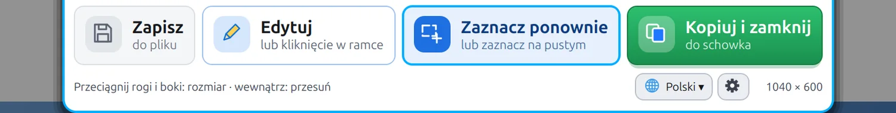
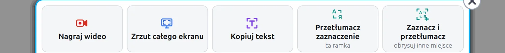
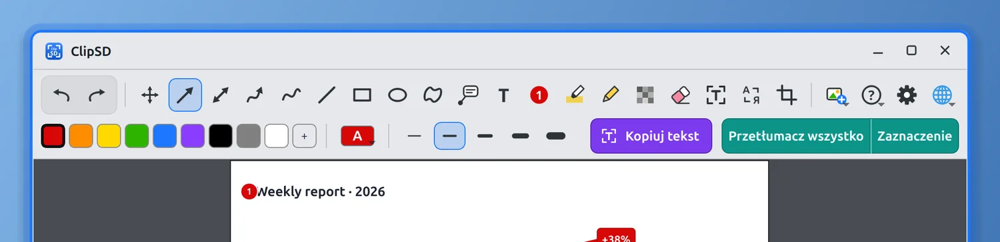
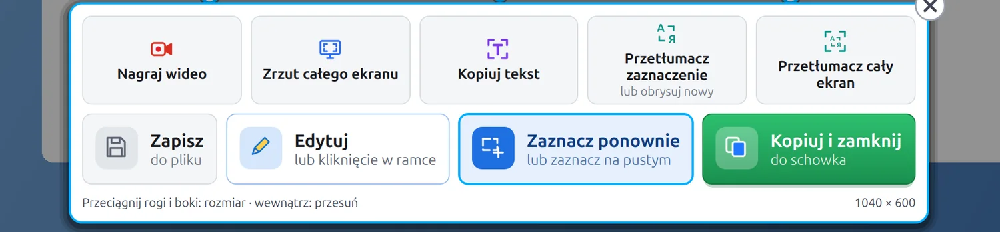

Historia wersji
Wersja 1.31.2
wydana
- Linux: aktualizacja znów instaluje się sama w nowszych systemach (na przykład Ubuntu 26.04). Wcześniej była pobierana, ale się nie instalowała.
- Linux: w nowszych systemach znów działają rozpoznawanie tekstu, linki i autostart.
- Jeśli aktualizacja się nie zainstaluje, pojawi się okno z przyciskami „Spróbuj ponownie” i „Raport o błędzie”. Raport nie zawiera nazwy użytkownika ani ścieżek do folderów osobistych.
- Po aktualizacji okno „Co nowego” zaczyna się od wiersza „Aktualizacja zainstalowana”.
Wersja 1.31.1
wydana
- W oknie zaznaczania obszaru można od razu zmienić język i otworzyć ustawienia: na dole panelu, po lewej od rozmiaru, jest globus z nazwą języka i zębatka.

- Tłumaczenie podzielono na dwa przyciski: „Przetłumacz zaznaczenie” tłumaczy ramkę, która już stoi, a „Zaznacz i przetłumacz” pozwala obrysować inne miejsce. Tłumaczenie całego ekranu przeniesiono do wiersza trybu tłumaczenia, przycisk „Cały ekran”.

- Panel w oknie zaznaczania jest około 15% bardziej zwarty i staje obok ramki, a nie na niej: pod, nad, z prawej lub z lewej. Do wnętrza ramki wchodzi tylko wtedy, gdy na zewnątrz nie ma miejsca.

- W ustawieniach jest nowa sekcja „Aktualizacje”: wersja, przycisk „Sprawdź aktualizacje” i pole automatycznego sprawdzania. Przycisk „?” w edytorze otwiera teraz menu: „Przewodnik po programie”, „Sprawdź aktualizacje” i „O programie”.


- W edytorze „Cofnij” i „Ponów” stoją na początku rzędu na osobnym tle. Domyślnie narzędzia są ułożone tak: przesuwanie, strzałki obok siebie, potem kształty, potem reszta. Kolejność ustawiona przez Ciebie się nie zmienia.

- Ikona globusa jest wszędzie jasnoniebieska i łatwiej ją znaleźć.
- Linux: naprawiono pierwszą instalację, która wcześniej mogła po cichu zatrzymać się w połowie.


Wersja 1.31.0
wydana
- ClipSD mówi w 12 językach: rosyjskim, angielskim, bułgarskim, ukraińskim, niemieckim, francuskim, hiszpańskim, włoskim, portugalskim, polskim, tureckim i chińskim. Język zmienia się od razu, bez ponownego uruchamiania: menu ikony przy zegarze, globus w edytorze, pierwszy krok przewodnika albo ustawienia.

- Nowy panel w oknie zaznaczania: u góry zrzut całego ekranu, nagrywanie wideo, kopiowanie tekstu i tłumaczenie, na dole „Edytuj”, „Zapisz” i „Kopiuj i zamknij”.

- Tłumaczenie kawałek po kawałku: obrysuj fragment, a tłumaczenie zostanie nałożone na tekst; obrysuj następny, a on również zostanie przetłumaczony. Esc kończy tryb.

- Tryby edytora „Kopiowanie tekstu”, „Kadrowanie” i „Tłumaczenie” są pokazane na pasku u góry z dużym przyciskiem wyjścia; Esc przywraca poprzednie narzędzie.

- ClipSD aktualizuje się sam. Raz dziennie sprawdza, czy jest nowa wersja, i proponuje „Aktualizuj”, „Później” albo „Pomiń tę wersję”. Aby sprawdzić od razu, wybierz z menu ikony „Sprawdź aktualizacje”. Aktualizacja jest weryfikowana za pomocą podpisu cyfrowego; jeśli nowa wersja się nie uruchomi, zostanie przywrócona poprzednia.